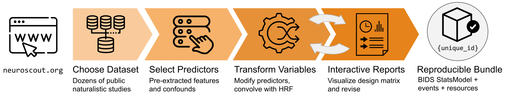

What is Neuroscout?
Contents
What is Neuroscout?#
Neuroscout is an end-to-end platform for analysis of naturalistic public fMRI datasets.
Using our interactive analysis builder, you can choose among dozens of naturalistic fMRI datasets and easily build statistical models in your browser. We provide hundreds of pre-extracted predictors, in addition to supporting custom user-uploaded predictors.

Analyses can be downloaded and executed it in one line of code using Neuroscout-CLI, and results are automatically uploaded to NeuroVault for easy sharing with colleagues.

🚀 Get started
neuroscout.org: Build a custom analysis
Neuroscout-CLI: Run your analysis
Python API: Advanced creation
Where can I get more help?#
Connect with us by asking a question on NeuroStars or open an issue on GitHub to report bugs or request new features.